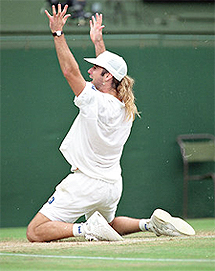
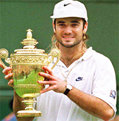
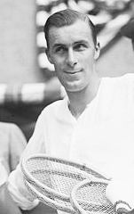

Previous: The Serve and Volley Three Critical Shots | 🏠 Strategy Home | Next: The Set-up Point
The Set-up Game
Comprehensive unified tennis knowledge base — Fundamentals, Stroke Analysis, Reference Library, and more
The Set-up Game
Brad Gilbert

What role did the Set up Game play in Andre Agassi's 1992 Wimbledon win?
In my first article for Tennisplayer, we looked at what I call the "Set-up Point." Basically a Set-up Point is any point that can move you to within one point of winning a game. (Click Here.)
Now in this second article, let's look at an equally important and unrecognized situation in competitive matches. This is the Set-up Game.
Basically, any game that can move a player to within one game of the set is a Set-up Game. It's similar to the Set-up Point in that it's generally not viewed by most players as anything special, just another game.
But a Set-up game is special. It isn't just another game, as I'll demonstrate using an example from a famous Wimbledon final.
The Set-up Game at 4-4 or 5-5, when both players have a chance to move up to a set game, has even more dynamic value. If you break serve you are then serving for the set.
Or if you hold serve (at 4-4 or 5-5) your opponent has the pressure of knowing if they don't hold serve they lose the set or match. Knowing that they have to hold serve or lose is significant pressure for most recreational players.

After Agassi won the set up game, Goran couldn't hold to save the match.
Andre understood fully the dynamics of wining the Set-up Game when he was serving at 4-4 in the fifth. Agassi said later that he "wanted to hang in long enough to make Goran thinking about it, to serve to save the match."
He knew what enormous pressure would then fall on Ivanisevic's shoulders (and elbow). Andre played a very effective and solid Set-up Game at 4-4, holding at 15.
He played very alert, stable and sensible tennis. No shots with unnecessary risk. It was a classic example of understanding the dynamics of the situation.
Underneath the long bleached hair was a brain thinking like a wise old Professor of Tennis. You can do the same in your matches if you pay attention.
All Goran Ivanisevic had to do to stay alive in the fifth set was to hold serve. But Goran knew if he doesn't hold serve at 4-5 he loses the match.
Pressure? Even though he had over two-hundred acres in the tournament and thirty-seven aces up to that point in the match, he began that service game with four consecutive faults!

A wise professor with bleached hair and a Wimbledon trophy.
On match point his first serve went eighteen inches below the top of the net. Agassi won the point and the tournament, but the setup game was the critical moment.
That's the pressure of knowing you have to hold serve or lose the match. And that's the kind of pressure you can put on your opponent by winning a Set-up Game.
Goran told the press later, "For the first time all match I was thinking in the air. Instead of thinking about my plan before I tossed the ball I started thinking when the ball was in the air." Pressure did it and it was the pressure created when Agassi won the Set-up Game.
When a Set-up Game arrives (especially at 4-all or 5-all) a flashing red light should go off in your head and signal: "Pay attention. The stakes have been raised. Don't be casual. Stay alert. Opportunity beckons."
Your concentration level should notch up considerably. Every point here is a big point. Every point helps or hurts a lot more.

Bill Tilden said the seventh game was critical, but was he right?
The Critical Seventh Game?
Here's one of the reasons I don't agree with the common notion that the seventh game is such a critical game in a set. It is critical if it moves one player to within four points (one game) of the set. This it can do at 4-2 or 2-4.
But it doesn't have nearly that importance at 3-3 at the club level. The "critical" game of the set for me is the Set-up Game, which moves one player to within striking distance of winning the set.
Play Like A Boa Constrictor
In those important swing moments of a match, I want to play like a boa constrictor. Do you know how a boa constrictor kills? It doesn't crush its prey. The victim suffocates.
Each time the victim exhales the boa constrictor tightens its hold slightly. The prey can't inhale as much on the next breath. Each time it breathes out it can't breathe in as much. Soon it can't breathe in at all.
Suffocation. Nothing flashy here. Just constant steady pressure. And that's my approach on the Set-up Games where winning moves one player to within four points of the set (or match).
Every time the victim exhales, the boa tightens slightly.
Don't force shots. Don't get impatient. Don't try to make something out of nothing. Just keep squeezing. When I'm playing the Set-up Game, I'm trying to get the other player to make mistakes, to get impatient, to go for the brilliant shot.
At a pivotal moment when a player can get to within four points of the set by winning the game, I put a premium on steadiness. I want my opponent to earn everything they get. Agassi played like a boa constrictor when he was serving at 4-4 in the fifth.
Most of the time in recreational tennis, Set-up Games are played loosely and without much consideration for their weight. A player who recognizes the potential in these situations will often have to do no more than get the ball over the net. The opponent will give up the points because of sloppy play and sloppy thinking.

Brad Gilbert is widely recognized as one of the top coaching minds, as well as one of the most direct and insightful television commentators in tennis. As a coach Brad has worked with numerous elite pro players including Grand Slam champions Andre Agassi, Andy Roddick, and Andy Murray. Ranked in the world top 5 in his playing career, Brad had wins over legendary champions including Boris Becker and John McEnroe and won 20 ATP titles. Brad is also the owner of Tennis Nation, one of the top tennis pro shops in the country for the true enthusiast, located in San Rafael, California.

Brad Gilbert: Winning Ugly
Brad Gilbert's Winning Ugly is one of the most highly regarded and valuable tennis books ever written. Covering the strategic and mental realities of competitive play from the tour to the club level, Winning Ugly is packed with Brad's original insights about how matches are really won, and strategies any player can apply to dramatically improve their match results. A classic, must read for all tennis players, Winning Ugly is now available as an ebook, an audio book, as well as in the second print edition with a new forward by Andy Murray.
Click Here to Order!
Source: tennisplayer.net archive — The Set-up Game.docx (John Yandell teaching library, 2002-2022). Extracted and rendered as HTML for Tennis Future Lab.